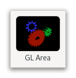

Gtk.GLArea¶
Example¶
- Subclasses:
None
Methods¶
- Inherited:
Gtk.Widget (181), GObject.Object (37), Gtk.Accessible (16), Gtk.Buildable (1)
- Structs:
class |
|
|
|
|
|
|
|
|
|
|
|
|
|
|
|
|
|
|
|
|
|
|
|
|
|
|
Virtual Methods¶
- Inherited:
Gtk.Widget (25), GObject.Object (7), Gtk.Accessible (6), Gtk.Buildable (9)
|
|
|
Properties¶
- Inherited:
Name |
Type |
Flags |
Short Description |
|---|---|---|---|
r/w/en |
|||
r/en |
|||
r/w/en |
|||
r |
|||
r/w/en |
|||
r/w/en |
|||
r/w/en |
|
Signals¶
- Inherited:
Name |
Short Description |
|---|---|
Emitted when the widget is being realized. |
|
Emitted every time the contents of the |
|
Emitted once when the widget is realized, and then each time the widget is changed while realized. |
Fields¶
- Inherited:
Name |
Type |
Access |
Description |
|---|---|---|---|
parent_instance |
r |
Class Details¶
- class Gtk.GLArea(**kwargs)¶
- Bases:
- Abstract:
No
- Structure:
GtkGLAreais a widget that allows drawing with OpenGL.An example
Gtk.GLAreaGtkGLAreasets up its own [class`Gdk`.GLContext], and creates a custom GL framebuffer that the widget will do GL rendering onto. It also ensures that this framebuffer is the default GL rendering target when rendering. The completed rendering is integrated into the larger GTK scene graph as a texture.In order to draw, you have to connect to the [signal`Gtk`.GLArea::render] signal, or subclass
GtkGLAreaand override the Gtk.GLAreaClass.render virtual function.The
GtkGLAreawidget ensures that theGdkGLContextis associated with the widget’s drawing area, and it is kept updated when the size and position of the drawing area changes.- Drawing with
Gtk.GLArea
The simplest way to draw using OpenGL commands in a
GtkGLAreais to create a widget instance and connect to the [signal`Gtk`.GLArea::render] signal:The
render()function will be called when theGtkGLAreais ready for you to draw its content:The initial contents of the framebuffer are transparent.
`` ``c static gboolean render (GtkGLArea *area, GdkGLContext *context) {
// inside this function it’s safe to use GL; the given // GdkGLContext has been made current to the drawable // surface used by the ``
Gtk.GLArea` and the viewport has// already been set to be the size of the allocation
// we can start by clearing the buffer glClearColor (0, 0, 0, 0); glClear (GL_COLOR_BUFFER_BIT);
// draw your object // draw_an_object ();
// we completed our drawing; the draw commands will be // flushed at the end of the signal emission chain, and // the buffers will be drawn on the window return
True; }void setup_glarea (void) { // create a
Gtk.GLAreainstanceGtk.Widget*gl_area =Gtk.GLArea.new();// connect to the “render” signal g_signal_connect (gl_area, “render”, G_CALLBACK (render),
None); } ```If you need to initialize OpenGL state, e.g. buffer objects or shaders, you should use the [signal`Gtk`.Widget::realize] signal; you can use the [signal`Gtk`.Widget::unrealize] signal to clean up. Since the
GdkGLContextcreation and initialization may fail, you will need to check for errors, using [method`Gtk`.GLArea.get_error].An example of how to safely initialize the GL state is:
```c static void on_realize (GtkGLarea *area) { // We need to make the context current if we want to // call GL API
Gtk.GLArea.make_current(area);// If there were errors during the initialization or // when trying to make the context current, this // function will return a
GLib.Errorfor you to catch if (Gtk.GLArea.get_error(area) !=None) return;// You can also use
Gtk.GLArea.set_error() in order // to show eventual initialization errors on the //Gtk.GLAreawidget itselfGLib.Error*internal_error =None; init_buffer_objects (&error); if (error !=None) {Gtk.GLArea.set_error(area, error);GLib.Error.free(error); return; }init_shaders (&error); if (error !=
None) {Gtk.GLArea.set_error(area, error);GLib.Error.free(error); return; } } ```If you need to change the options for creating the
GdkGLContextyou should use the [signal`Gtk`.GLArea::create-context] signal.- attach_buffers()[source]¶
Binds buffers to the framebuffer.
Ensures that the self framebuffer object is made the current draw and read target, and that all the required buffers for the self are created and bound to the framebuffer.
This function is automatically called before emitting the [signal`Gtk`.GLArea::render] signal, and doesn’t normally need to be called by application code.
- get_allowed_apis()[source]¶
- Returns:
the allowed APIs
- Return type:
Gets the allowed APIs.
See [method`Gtk`.GLArea.set_allowed_apis].
New in version 4.12.
- get_api()[source]¶
- Returns:
the currently used API
- Return type:
Gets the API that is currently in use.
If the GL area has not been realized yet, 0 is returned.
New in version 4.12.
- get_context()[source]¶
- Returns:
the
GdkGLContext- Return type:
Retrieves the
GdkGLContextused by self.
- get_error()[source]¶
- Returns:
the
GError- Return type:
GLib.ErrororNone
Gets the current error set on the self.
- get_required_version()[source]¶
- Returns:
- major:
return location for the required major version
- minor:
return location for the required minor version
- Return type:
Retrieves the required version of OpenGL.
See [method`Gtk`.GLArea.set_required_version].
- get_use_es()[source]¶
-
Returns whether the
GtkGLAreashould use OpenGL ES.See [method`Gtk`.GLArea.set_use_es].
Deprecated since version 4.12: Use [method`Gtk`.GLArea.get_api]
- make_current()[source]¶
Ensures that the
GdkGLContextused by self is associated with theGtkGLArea.This function is automatically called before emitting the [signal`Gtk`.GLArea::render] signal, and doesn’t normally need to be called by application code.
- queue_render()[source]¶
Marks the currently rendered data (if any) as invalid, and queues a redraw of the widget.
This ensures that the [signal`Gtk`.GLArea::render] signal is emitted during the draw.
This is only needed when [method`Gtk`.GLArea.set_auto_render] has been called with a
Falsevalue. The default behaviour is to emit [signal`Gtk`.GLArea::render] on each draw.
- set_allowed_apis(apis)[source]¶
- Parameters:
apis (
Gdk.GLAPI) – the allowed APIs
Sets the allowed APIs to create a context with.
You should check [property`Gtk`.GLArea:api] before drawing with either API.
By default, all APIs are allowed.
New in version 4.12.
- set_auto_render(auto_render)[source]¶
- Parameters:
auto_render (
bool) – a boolean
Sets whether the
GtkGLAreais in auto render mode.If auto_render is
Truethe [signal`Gtk`.GLArea::render] signal will be emitted every time the widget draws. This is the default and is useful if drawing the widget is faster.If auto_render is
Falsethe data from previous rendering is kept around and will be used for drawing the widget the next time, unless the window is resized. In order to force a rendering [method`Gtk`.GLArea.queue_render] must be called. This mode is useful when the scene changes seldom, but takes a long time to redraw.
- set_error(error)[source]¶
- Parameters:
error (
GLib.ErrororNone) – a newGError, orNoneto unset the error
Sets an error on the area which will be shown instead of the GL rendering.
This is useful in the [signal`Gtk`.GLArea::create-context] signal if GL context creation fails.
- set_has_depth_buffer(has_depth_buffer)[source]¶
-
Sets whether the
GtkGLAreashould use a depth buffer.If has_depth_buffer is
Truethe widget will allocate and enable a depth buffer for the target framebuffer. Otherwise there will be none.
- set_has_stencil_buffer(has_stencil_buffer)[source]¶
-
Sets whether the
GtkGLAreashould use a stencil buffer.If has_stencil_buffer is
Truethe widget will allocate and enable a stencil buffer for the target framebuffer. Otherwise there will be none.
- set_required_version(major, minor)[source]¶
-
Sets the required version of OpenGL to be used when creating the context for the widget.
This function must be called before the area has been realized.
- set_use_es(use_es)[source]¶
- Parameters:
use_es (
bool) – whether to use OpenGL or OpenGL ES
Sets whether the self should create an OpenGL or an OpenGL ES context.
You should check the capabilities of the
GdkGLContextbefore drawing with either API.Deprecated since version 4.12: Use [method`Gtk`.GLArea.set_allowed_apis]
- do_render(context) virtual¶
- Parameters:
context (
Gdk.GLContext) –- Return type:
class closure for the
GtkGLArea::rendersignal
Signal Details¶
- Gtk.GLArea.signals.create_context(g_l_area)¶
- Signal Name:
create-context- Flags:
- Parameters:
g_l_area (
Gtk.GLArea) – The object which received the signal- Returns:
a newly created
GdkGLContext; theGtkGLAreawidget will take ownership of the returned value.- Return type:
Emitted when the widget is being realized.
This allows you to override how the GL context is created. This is useful when you want to reuse an existing GL context, or if you want to try creating different kinds of GL options.
If context creation fails then the signal handler can use [method`Gtk`.GLArea.set_error] to register a more detailed error of how the construction failed.
- Gtk.GLArea.signals.render(g_l_area, context)¶
- Signal Name:
render- Flags:
- Parameters:
g_l_area (
Gtk.GLArea) – The object which received the signalcontext (
Gdk.GLContext) – theGdkGLContextused by area
- Returns:
Trueto stop other handlers from being invoked for the event.Falseto propagate the event further.- Return type:
Emitted every time the contents of the
GtkGLAreashould be redrawn.The context is bound to the area prior to emitting this function, and the buffers are painted to the window once the emission terminates.
- Gtk.GLArea.signals.resize(g_l_area, width, height)¶
- Signal Name:
resize- Flags:
- Parameters:
g_l_area (
Gtk.GLArea) – The object which received the signalwidth (
int) – the width of the viewportheight (
int) – the height of the viewport
Emitted once when the widget is realized, and then each time the widget is changed while realized.
This is useful in order to keep GL state up to date with the widget size, like for instance camera properties which may depend on the width/height ratio.
The GL context for the area is guaranteed to be current when this signal is emitted.
The default handler sets up the GL viewport.
Property Details¶
- Gtk.GLArea.props.allowed_apis¶
- Name:
allowed-apis- Type:
- Default Value:
- Flags:
The allowed APIs.
New in version 4.12.
- Gtk.GLArea.props.api¶
- Name:
api- Type:
- Default Value:
0- Flags:
The API currently in use.
New in version 4.12.
- Gtk.GLArea.props.auto_render¶
- Name:
auto-render- Type:
- Default Value:
- Flags:
If set to
Truethe::rendersignal will be emitted every time the widget draws.This is the default and is useful if drawing the widget is faster.
If set to
Falsethe data from previous rendering is kept around and will be used for drawing the widget the next time, unless the window is resized. In order to force a rendering [method`Gtk`.GLArea.queue_render] must be called. This mode is useful when the scene changes seldom, but takes a long time to redraw.
- Gtk.GLArea.props.context¶
- Name:
context- Type:
- Default Value:
- Flags:
The
GdkGLContextused by theGtkGLAreawidget.The
GtkGLAreawidget is responsible for creating theGdkGLContextinstance. If you need to render with other kinds of buffers (stencil, depth, etc), use render buffers.
- Gtk.GLArea.props.has_depth_buffer¶
- Name:
has-depth-buffer- Type:
- Default Value:
- Flags:
If set to
Truethe widget will allocate and enable a depth buffer for the target framebuffer.Setting this property will enable GL’s depth testing as a side effect. If you don’t need depth testing, you should call
glDisable(GL_DEPTH_TEST)in yourGtkGLArea::renderhandler.